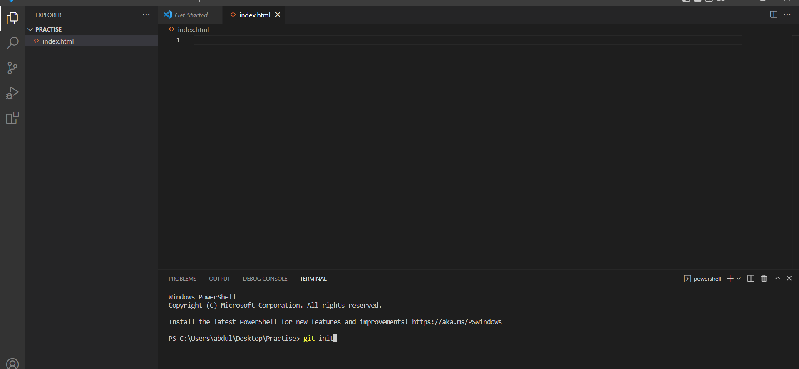
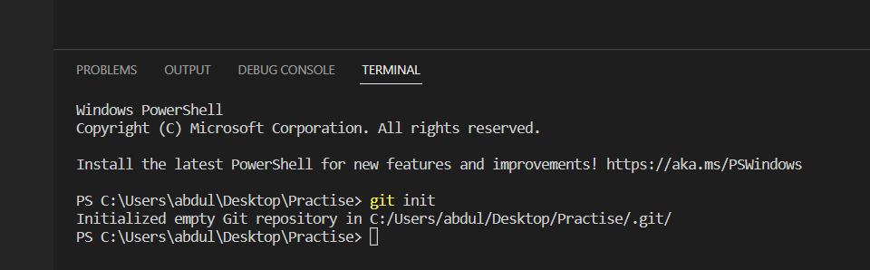
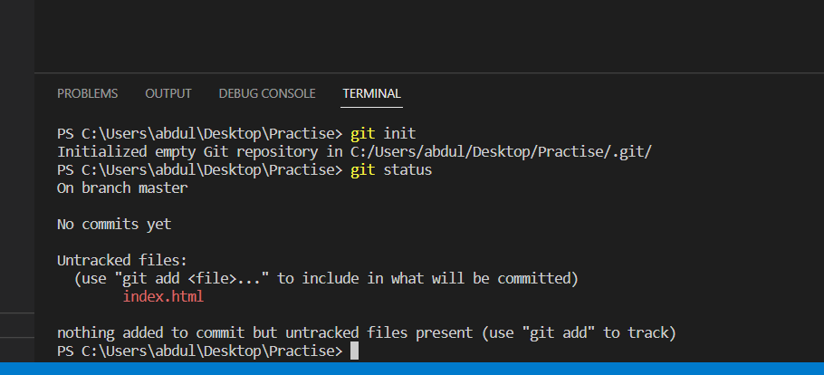
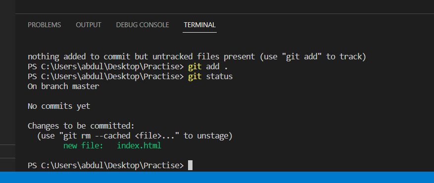
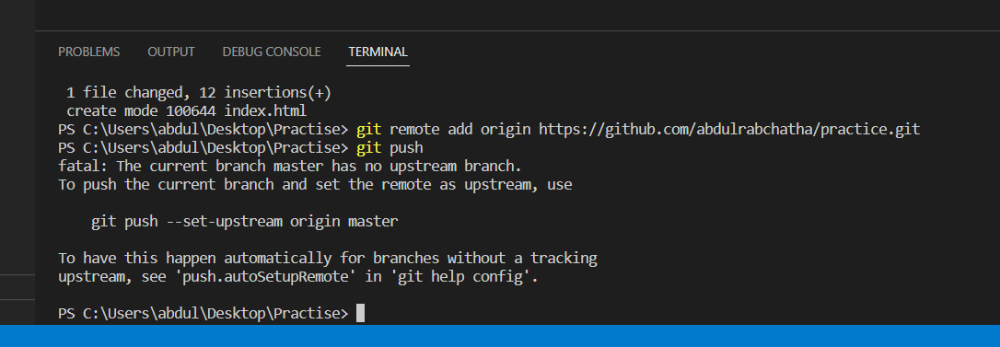
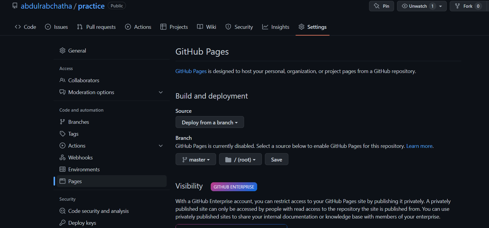

How to Host Static Web Page on Git-Hub
- Make a new folder.
- Now, open Command Prompt in that Folder.
- Run command "Code ." to open visual code in that folder.
- Make a new File of Html extension

- It looks like this now..

- Open Terminal and Run command "git init". It will a create a hidden folder that contains Git Files.

- Now run command "git status", it will tell us which files are to be added in git hidden folder. Files to be added marked in red color.

- Run "git add ." or "git add 'Filename'" to add files or specific file. Again check status of files using "git status". Now files are added and marked in green color.

- Commit your work using "git commit -m "'any message'"

- Make a repository on Git-Hub and copy the Address.Run the command "git remote add origin " 'Link Address' " "

- In last, push the data from hidden Git folder to remote repository using "git push". at first you get error of this type.

- Solution to above error is given. Simply copy and paste it.

Branches Concept
- "git branch" is used to see the available branches
- "git branch chatha" used to create a new branch named "chatha"
- "git checkout chatha" used to change your branch from origin/master to chatha
- "git merge chatha" used to merge brnch named chatha with you are currently active
- "git branch -d chatha" used to delete branch "chatha" after merging it.
- "git branch -D chatha1" used to delete branch "chatha1" without merging it.
Cloning Concept
- "git clone 'repo link' " is used to clonr the repository folder on other pc
- Now, I added a new style.css file in clone folder and checking its status
- Adding the untracked files to the git local hidden folder using "git add ."
- Pushing the local git data to online repository using push command after commiing it.

- When I try to push local git files to online repository got error of pulling data from online repository because there exists a file
that is not availabe in first pc.
- To solve this run command "git pull"
Now your files are added to your Git-Hub Repository. To make web live follow NExt Steps...
- Go to Settings. Make Sure that project repository in Public View.
- Now go to Pages
- Select Source "Deploy from Branch". And Branch is "master" and "/(root)" like in the picture. Click Save...

- In couple of minutes you got the Link your Live Web Page.
.... Hurrah! You Done with your live Web ....